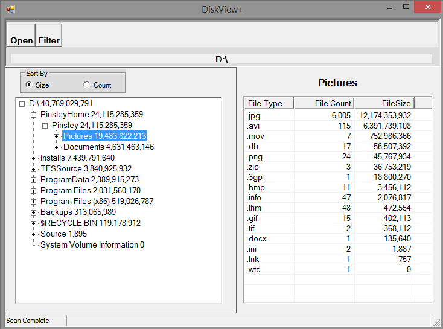
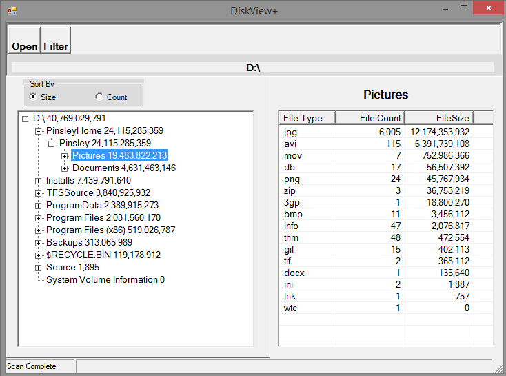

Over the years, I've often found myself wondering what's taking up disk space on a volume. Although I found a number of utilities available to scan a volume and report usage, none of them reported the information in a way that made me happy. So I wrote my own -- DiskView+. It's not a pretty application -- it's a battleship-gray WinForms application -- but it has saved the day a number of times. The code for it is on GitHub at ___.
The Initial Display
After selecting a drive (or folder within), DiskView+ will scan the volume and display this window.
 Here I've scanned my laptop's D: drive and see that I'm using about 40 GB of space. But where is it hiding? Expanding the tree reveals:
Here I've scanned my laptop's D: drive and see that I'm using about 40 GB of space. But where is it hiding? Expanding the tree reveals:
 The tree on the left is sorted in descending size order. The radio buttons allow you to toggle between sorting by file size or by file count. The list view on the right shows the statistics for the folder selected on the left and all of its descendents. I can see that approximately 24 GB is sitting in a top level folder called PinsleyHome. Since I see that PinsleyHome contains the most space, I will select it.
The tree on the left is sorted in descending size order. The radio buttons allow you to toggle between sorting by file size or by file count. The list view on the right shows the statistics for the folder selected on the left and all of its descendents. I can see that approximately 24 GB is sitting in a top level folder called PinsleyHome. Since I see that PinsleyHome contains the most space, I will select it.
 I can see the space usage broken out by file type for the entire PinsleyHome folder tree. I can also sort the right hand side by either file size or file count. After sorting by file size, I see the following:
I can see the space usage broken out by file type for the entire PinsleyHome folder tree. I can also sort the right hand side by either file size or file count. After sorting by file size, I see the following:
 Now we're getting somewhere. I can see that I have about 6,000 JPG files totaling about 12 GB and 115 AVI files totaling 6 GB. So it looks like 50% of the space used within PinsleyHome is taken up by pictures. Expanding the left hand tree a bit more reveals:

I can see that PinsleyHome contains two folders -- Pictures at about 19.4 GB and Documents at 4.6 GB. But where are the AVI files hiding? Expanding another level might help.
It looks like some of my AVI files are in the "2009-12-09 Pilar camera - 2nd attempt folder" -- exactly 35 AVI files for 2.4 GB. 50% of this folders space usage is taken up by the 963 JPG files.
Now we're getting somewhere. I can see that I have about 6,000 JPG files totaling about 12 GB and 115 AVI files totaling 6 GB. So it looks like 50% of the space used within PinsleyHome is taken up by pictures. Expanding the left hand tree a bit more reveals:

I can see that PinsleyHome contains two folders -- Pictures at about 19.4 GB and Documents at 4.6 GB. But where are the AVI files hiding? Expanding another level might help.
It looks like some of my AVI files are in the "2009-12-09 Pilar camera - 2nd attempt folder" -- exactly 35 AVI files for 2.4 GB. 50% of this folders space usage is taken up by the 963 JPG files.
Filters
But what about the rest of the AVI files? How can I find them? That's where DiskView+'s filtering feature can come in handy. After clicking the Filter button, I get the following screen:
 This multi-select checkbox list contains an entry for every file type found on the D: volume. I'm going to deselect everything but AVI by clicking Deselect All and then checking off AVI.
This multi-select checkbox list contains an entry for every file type found on the D: volume. I'm going to deselect everything but AVI by clicking Deselect All and then checking off AVI.
 DiskView+ will rescan and reconstruct the left-hand tree to show totals as if the only files on the filesystem are AVI files.
DiskView+ will rescan and reconstruct the left-hand tree to show totals as if the only files on the filesystem are AVI files.
 It is clear tha the AVI files are found in the first two subfolders under pictures. Note that although the left-hand tree only reflect totals for the filtered file type, the right-hand list view still displays all the totals for the selected folder without regard to the currently active filter.
It is clear tha the AVI files are found in the first two subfolders under pictures. Note that although the left-hand tree only reflect totals for the filtered file type, the right-hand list view still displays all the totals for the selected folder without regard to the currently active filter.
Summary
Sometimes the reasons for shinking free disk space are hard to identify. I've found that DiskView+ can usually quickly identify what's taking up the space and, with this information, its usually easy to determine the responsible process. I hope you find DiskView+ as useful as I have.